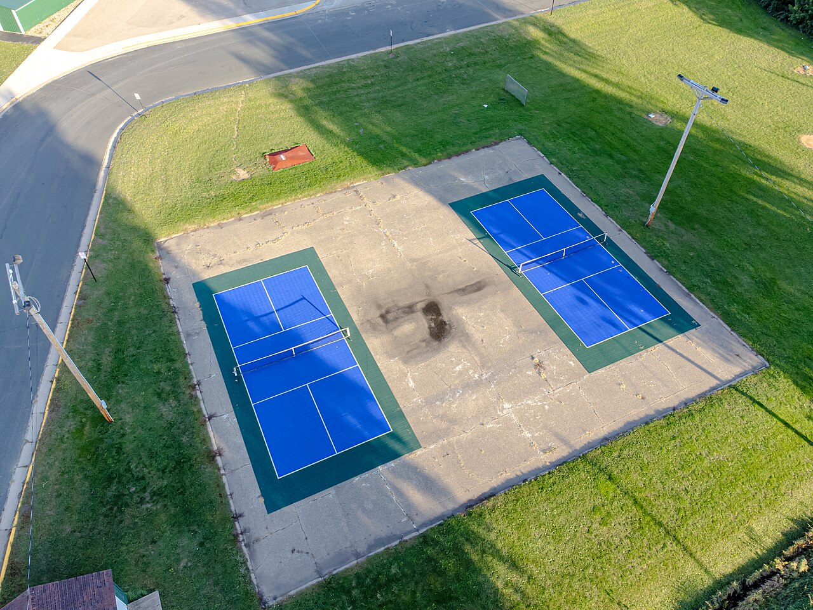
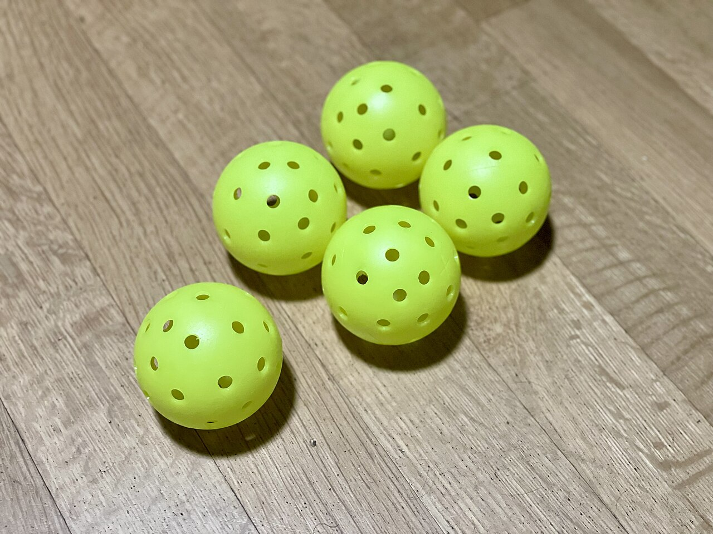
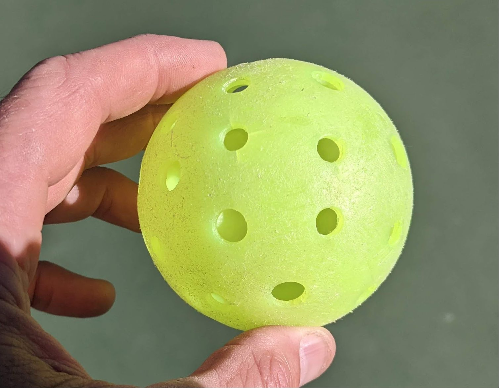

Gate Review 1 · Customer & Market Research
Customers & Benefits
Who experiences the problem, who would pay to solve it, what they want from a product, and what a successful product would give them.
The problem, from the court
A competitive player arrives for a club session or a tournament expecting to think about strategy, not equipment. Before the first game they pick a ball, bounce it and squeeze it, a check that takes about three seconds (P3) [2] and that more than half of our survey respondents do not trust: 52.8% rate their confidence at 3 or lower out of 7 [1]. Then, mid-game, a ball that looked fine skids or bounces low, and the rally is decided by the ball rather than the players. Nearly three in four respondents (72.2%) have played with a cracked ball [1]. Because softening and hairline cracks are hard to see, the most common frustration among the 15 respondents asked is exactly that: damage is difficult to see (46.7%) [1].
This matters most to the players who care most about the game. Competition is the top reason our respondents play (48.5% rank it first), and consistent performance is their top equipment criterion (52.8%) [1]. An unpredictable ball undermines both, which is why the rest of this page treats the benefit as consistent, uninterrupted play rather than damage detection for its own sake.
Where the evidence comes from
The product concerns the pickleball itself. Evidence comes from a consumer survey (36 responses to the final form plus 4 pilot responses) [1], four semi-structured interviews [2], the team's customer journey map [3], the team QFD [4], and published rules, standards and literature. Interview participants are identified by number only: P1 a recreational player, P2 a frequent player who co-owns an indoor facility, P3 a competitive tournament player, and P4 the owner of two indoor pickleball venues. Statements that are the team's interpretation rather than a documented finding carry the Interpretation tag. Full methods are on the Market Research page.
Customers, users and stakeholders
The primary customer is the frequent, competitive player: the person who feels the failure and, for the balls they own, the person who buys. Half of respondents bring their own balls at least some of the time [1], and frequent players are the most interested in an objective test (64.7% against 47.4% of occasional players) [1]. P3, a competitive player, expected “diehard pickleballers” to buy one [2]. Facilities (clubs, indoor venues and tournament directors) are a second purchaser, because they supply and retire shared balls. The casual players we interviewed preferred that route:
“I don't think I would purchase something to determine whether or not it's good… when [P2] goes and plays at the club, they give her the balls.”P1, recreational player [2]
“I don't know that I would buy a device for that, but maybe if it was something at the club where you could just like throw the balls in and it would shoot out the ones that were good… That could be kind of cool.”P2, frequent player and facility co-owner [2]
The facility owner tempers the facility case. P4's venues do not inspect balls, because “it's pretty obvious when a ball has had it”; broken balls are thrown away, and “equipment is kind of the least of my problems” [2]. Facilities remain a plausible second purchaser because they own shared inventory, but their need is not yet proven. Figure 1 and Table 1 set out each role.
| Role | Who | What they want most | Source |
|---|---|---|---|
| Primary customer and user | Frequent, competitive players: at least weekly play, keep score, enter club or tournament play; professionals at the top. They buy for the balls they own (50% bring their own at least some of the time [1]) | Every ball in play behaves like a good ball; a check no slower than today's bounce test | Survey [1], interviews [2], journey map [3] |
| Second purchaser | Facilities: clubs, indoor venues and tournament directors. Venues stock balls in caddies for self-serve play, often with no staff present (P4). A tournament director must choose the ball from the approved list (Rule 16.G) [6] | A consistent, defensible way to retire balls; no slowed play; a competitive price | Interviews [2], QFD [4], rulebook [6] |
| Producer and seller | A new product line within an existing sports-equipment company and its contract manufacturers, selling through sporting-goods retailers, online stores, club pro shops, and directly to facilities | Buildable at a competitive price; long-lasting; easy to explain | QFD [4]; Interpretation |
| Other stakeholders | Opponents and partners; USA Pickleball (ball standards and approved list [5][7]); ball manufacturers; the environment | No waiting on someone else's check; fair balls on both sides; no implied certification; less plastic waste | QFD [4], rulebook [6] |
Table 1. Stakeholder roles and priorities. The QFD weights each customer requirement separately for players, court owners/tournament organizers, manufacturers, and other players [4].
Primary user profile
Survey respondents skew young and university-affiliated: 80.6% are 18–24. Most have played for one to three years (69.7%) or longer (15.2%), 47.2% play weekly or more, and 58.3% play mainly outdoors (Figure 2) [1]. The survey did not ask occupation, income or family status; the age skew and university distribution suggest most respondents are students Interpretation. The interviews broaden the picture with an elementary-school teacher who plays with family (P1), a retired frequent player (P2), and a young, formerly college-competitive player who enters ranked tournaments (P3). P4 describes his venues' users as aged “8 to 80,” from first-timers to rated players who play “five times a week” [2]. Nationally, 24.3 million Americans played in 2025, and ages 13–24 have the highest participation rate of any age group [8].
Persona. The primary user is a composite of the modal respondent and the frequent-player subgroup: Maya, 21, a university student who plays four times a week, outdoors, in sessions of up to two hours, and who brings her own balls about half the time Composite. Table 2 profiles this user beyond demographics.
| Attribute | Finding | Source |
|---|---|---|
| Values and priorities | Performance first. 52.8% rank consistent performance as their top equipment criterion, against 16.7% for price and 13.9% each for durability and long life. Easy identification of damage comes last (2.8%; worst mean rank, 4.78 of 5, n=18). | Survey [1] |
| Goals and motivations | To compete and win. Competition is ranked first by 48.5% (n=33), ahead of improving skill (24.2%) and exercise (18.2%); teamwork is last (Figure 3). These players keep score, so a bad ball costs them something. | Survey [1] |
| Habits and behaviors | They check balls by hand every session: 68.8% look, 62.5% compare bounce and 43.8% hit the ball to feel it (n=16). P3 slaps the ball against the floor with her paddle and says she can usually tell “within 3 seconds.” P1 keeps an unlabeled “hodgepodge” of balls in one bag; P2's club players write their names on their balls. | Survey [1], interviews [2] |
| Social and cultural context | Doubles on shared courts with pooled balls. Clubs supply balls for open play; players bring their own for rented courts; public parks supply none. Under Rule 10.G a damaged ball is replaced only if all players agree [6], so checking a ball asks three people to wait. Players are attached to how a ball looks and plays: P1 wants only fluorescent yellow. | Interviews [2], rulebook [6] |
| Functional needs | Know before play whether each ball still plays like a good ball, which the standard defines as bouncing 30–34 in. from a 78 in. drop [5], without special skill, good eyesight, power, or more than a few seconds. The solution must not change how a good ball plays: P2, P3 and P4 all note that the more crack-resistant “Lifetime” ball plays differently. | Standard [5], interviews [2] |
| Emotional tensions | The top frustration is that damage is hard to see (46.7%, n=15), then “is it the ball or me?” (33.3%) (Figure 4). The journey map's low point is a mid-rally failure and a replayed point [3]. Context matters: P2 said a break “in the last point” of a tournament “could be annoying,” and P3 is “pretty mad” with no replacement ball. | Survey [1], interviews [2], journey map [3] |
| Aspirations | To stop thinking about equipment so attention stays on the game. Frequent players are both more confident (58.8% vs 26.3%) and more interested in an objective test (64.7% vs 47.4%). They want their judgment confirmed, not replaced. | Survey [1] |
Table 2. Primary user profile. Percentages are of n=36 unless another n is given.
Use environment and customer journey
Most play is outdoors (58.3%) [1], on dedicated or shared tennis courts exposed to sun, cold and rough surfaces, with no storage or power (Figure 5). Breakage depends on level and ball: P2 sees a cracked ball “probably every other time I play,” and P3 goes through about one ball per session at a high level [2]. P4 describes the facility setting: indoor venues in former warehouses and big-box stores, kept at a constant 65°F, run without staff for up to about 21 hours a day. A four-court facility “could easily go through 200, 300 balls a month,” balls “crack more quickly if it's cold,” and rough concrete or asphalt wears them faster [2]. Any facility version must therefore work unattended.





Journey map
Target customer: a frequent, competitive player. Goal: play a tournament or club session without a ball failure deciding a point. Context: a club or tournament court, indoors or outdoors, using club-supplied balls or balls from the player's own bag. Beginning and end: the journey starts when the player arrives to play and ends with the post-game evaluation of what failed (Figure 7) [3].
Touchpoints. Products: the ball and the club's ball caddy. People: partner, opponents and, in sanctioned play, the referee, who must agree to or rule on a swap (Rules 10.G, 20.F) [6]. Information: the rulebook and word of mouth. Environment: court surface and temperature, which change how fast balls fail [2]. Services: club-supplied balls for open play, court booking, and often no staff on site [2].
Why the customer feels this way. The positive start reflects that players expect not to think about equipment. The neutral selection step reflects low confidence: 52.8% rate their judgment at 3 or below of 7 [1]. The negative mid-game step is the failure itself: 72.2% have played with a cracked ball [1]. The recovery afterwards reflects how little one ball costs: “if I lose 10 balls a day, I don't really care” (P4) [2].
| Unmet need | Where in the journey | Evidence |
|---|---|---|
| Nuisance | Choosing a ball: good and bad balls look alike (Figure 6) | 46.7% say damage is hard to see; 72.2% have played with a cracked ball, 36.1% with a soft one [1] |
| Failure | Mid-rally: the ball cracks, softens or bounces wrong | P2: a crack about every other session; P3: about one ball per session [2] |
| Workaround | Before and between games | Look, bounce, hit, or slap it against the floor [1][2] |
| Excess effort | Checking a bag or caddy of balls one by one | Journey map [3]; clubs supply pooled balls [2] |
| Fairness | A soft ball cannot be proven soft, so the point stands | Rule 10.G.2: no replay for a soft or degraded ball [6] |
| Waste and cost | After play: guessing what to discard | 26.7% do not know when to replace; 26.7% dislike discarding usable gear (n=15) [1]; P4 discards 200–300 balls a month [2] |
| Safety | Not a primary ball concern | Emergency-department injuries are mainly strains, sprains, fractures and falls [9][10]; P2 notes players wear eye protection against fast balls; P4's safety concern is a roof leak making a court slippery [2] |
Table 3. Where the current journey fails the user.
From journey to QFD. Finishing a session without a mid-game ball failure becomes the QFD requirement Improves gameplay, measured by the decrease in games with equipment malfunction. The selection step becomes Increases confidence in quality (user confidence, %). The time pressure at every step becomes Fast analysis (time to use, s) [4]. See the House of Quality.
Priority customer benefits
Four benefits follow from the evidence, ordered by strength of support. Each is stated as an outcome, leaving room for concept generation.
| Benefit | Why it is valuable | How it improves today | Why it drives adoption |
|---|---|---|---|
| 1. Every ball in play performs like a good ball | Consistency is the top purchase criterion (52.8%) [1], and competition is why these players play | Balls below the bounce standard [5] come out before play instead of failing mid-rally, where a soft ball gets no replay [6] | It delivers what players already buy equipment for, not inspection, which they rank last |
| 2. An objective answer players can trust | 52.8% rate their confidence at 3 or below of 7; 33.3% cannot separate the ball from their own play [1] | A reading both teams can agree on, which is what Rule 10.G requires before a swap [6] | 55.6% overall and 64.7% of frequent players find an objective test useful [1] |
| 3. A check that costs almost nothing | Today's workaround takes seconds (P3: “within 3 seconds”) and needs no equipment [1][2] | A clear keep-or-retire answer instead of a hunch, in 30 s or less (QFD target) [4] | Players will not use anything slower, however accurate Interpretation |
| 4. Facilities retire balls on evidence (secondary purchaser; hypothesis) | Facilities supply and replace balls repeatedly; casual players P1 and P2 preferred a tester at the club [2] | Dead balls leave play and usable ones stay in | Mixed evidence: P4 pays about $1.62 a ball and does not inspect them [2], so value must come from consistent play for members, not from ball savings |
Table 4. Priority customer benefits.
Only 2.8% rank easy damage identification first [1]. P3 cautioned that “life left in a ball is subjective”: it depends on who is playing, and professionals mostly use new balls [2]. A useful reading must connect to how the ball plays, such as bounce against the published standard [5], rather than to cosmetic wear. P3's own suggestion, a ball that “changes color when it cracks,” shows that a simple signal would be welcome [2].
Contextual considerations
| Factor | How it applies |
|---|---|
| User experience | Used courtside, often one-handed, by players aged from under 18 to 64 in our sample [1] and “8 to 80” at P4's venues [2]. The result must not rely on fine vision, dexterity or color perception. |
| Business / economic | Players are the primary purchaser and facilities a second one; neither's price tolerance is known because the survey did not ask. P4's four-court venue uses 200–300 balls a month at about $1.62 each, roughly $324–$486 a month (team calculation) [2], and he sees no need for ball repair. Existing testing instruments cost $2,900–$4,995 to buy (team QFD benchmarking, prices checked against the makers and Tennis.com) [4], or $299 a month to rent in the case of the Go/No-Go. |
| Social | Checking makes others wait, and a swap needs everyone's agreement [6]. An objective reading could settle disputes that feel cannot. |
| Ecosystem / environment | Balls are molded low-density polyethylene (LDPE, resin code 4); most broken balls end up in landfill because they are rarely marked for recycling [12]. They are discarded in volume (P4: 200–300 a month at one venue). Catching dead balls may raise discard rates; clearing good balls may lower them (26.7% discard gear they think is usable [1]). The net effect is unknown. The device's own materials and end of life also count. |
| Regulatory | Ball designs must be approved under the USA Pickleball Equipment Standards Manual (Rule 3.C.2), and tournament balls must come from the approved list (Rule 16.G) [6]; 393 balls are listed [7]. The manual sets bounce, compression, size and weight for new balls (hardness is now recorded only) [5]; no standard defines when a ball in service is worn out (Rules 10.G, 20.F) [6]. The product must not imply certification. |
| Professional | Designed in a university analytical product-design course: claims must trace to evidence, and participant data stays anonymized and off this public site. |
| Personal value | Team members play; the nuisance was observed first-hand before it was researched. |
| Global | The International and World Pickleball Federations voted in 2025 to merge and pursue Olympic recognition [11]. Standards may differ by country, so the product should not depend on an app, a subscription, or one power standard. |
| Public health, safety and welfare | Ball condition is mainly a fairness issue. Emergency-department injuries are dominated by strains, sprains and fractures in players over 50 [9], most often aged 60–79 [10], not by equipment failure. The device itself must avoid pinch points, sharp edges and battery hazards, and be usable by older players. |
| Cultural | The culture is casual and social: P2 chose the sport for open play [2]. Anything that looks like lab equipment may be rejected, which is why “looks cool” is a QFD requirement [4]. |
Table 5. Contextual considerations.
Hypotheses still to validate
- We hypothesize that frequent and competitive players will pay for their own ball check when they play in rated or tournament settings because a dead ball costs them points. This can be validated by adding a willingness-to-pay question to the next survey, aimed at league and tournament players.
- We hypothesize that club and tournament operators will pay for ball screening when they run rated or competitive programs because consistent balls matter more to those members. This can be validated by interviews and a willingness-to-pay survey with more operators. (P4 runs mixed programs and saw no need.)
- We hypothesize that frequent players lose points to soft balls before visible cracking because softening is not visible. This can be validated by drop-testing used balls against the 78 in./30–34 in. reference [5] and comparing results with players' own judgments.
- We hypothesize that older and club-based players share the needs found in our young sample because the failure modes are the same. This can be validated by a second survey distributed at clubs and tournaments.
References
- [1] Team 1, “Activity 10a: Consumer Survey,” ME 455, University of Michigan, 2026. 40 responses (4 pilot, 36 final). Raw data held by the team; see Market Research.
- [2] Team 1, “Activity 10b: Consumer Interviews,” ME 455, 2026. Four semi-structured interviews (P1–P4). P1, P2 and P4 from transcripts; P3 from typed notes. Participants identified by number only.
- [3] Team 1, “Activity 11: Customer Journey Map,” ME 455, 2026.
- [4] Team 1, QFD workbook and submission, ME 455, 2026. See House of Quality.
- [5] USA Pickleball, Equipment Standards Manual, Jan. 2025. usapickleball.org
- [6] USA Pickleball, 2026 Official Rulebook, Rules 3.C, 10.G, 16.G and 20.F. usapickleball.org
- [7] USA Pickleball, “Approved Balls,” accessed Sep. 28, 2026. equipment.usapickleball.org
- [8] Sports & Fitness Industry Association, “SFIA Releases 2026 Pickleball Single Sport Report,” 2026. sfia.org
- [9] M. B. Forrester, “Pickleball-related injuries treated in emergency departments,” J. Emerg. Med., 58(2), 275–279, 2020. doi:10.1016/j.jemermed.2019.09.016
- [10] P. McMillan et al., “The epidemiology of pickleball injuries presenting to US emergency departments,” Sports Health, 18(4), 749–755, 2026. doi:10.1177/19417381251350671
- [11] “International Pickleball Federation,” Wikipedia, accessed Sep. 28, 2026. en.wikipedia.org
- [12] F. Cerabino, “Tough Breaks in the Life of a Pickleball,” The Pickler / Inside the Den, Sep. 18, 2023. insideden.com
- [13] PickleGeeks, “Best Cold Weather Pickleballs,” Jan. 28, 2024. Photo used with credit. picklegeeks.com